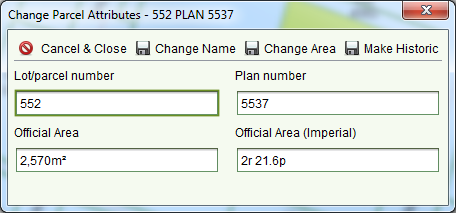

The Change Parcel Attribute Tool can be used to correct
the Lot number, Plan number or area of a parcel as well as make a current parcel historic to
remove it from the map. To access this tool, use the Map Find to locate and select the parcel
you wish to edit then click
Change Parcel Attribute Tool can be used to correct
the Lot number, Plan number or area of a parcel as well as make a current parcel historic to
remove it from the map. To access this tool, use the Map Find to locate and select the parcel
you wish to edit then click in the Map toolbar. The Change Parcel
Attributes dialog will display.
in the Map toolbar. The Change Parcel
Attributes dialog will display.

Change Parcel Attributes dialog
To change the lot or plan number, enter the new lot and/or plan numbers in the fields
provided and click Change Name.
Change Name.
To change the area, enter the correct Official Area in either metric (meters) or imperial
(acres a, roods r and perches p) and click Change Area.
Change Area.
To make the parcel historic, click Make Historic. WARNING Care should be taken when using this
option. Once the parcel is historic, no further changes to the parcel will be possible.
Make Historic. WARNING Care should be taken when using this
option. Once the parcel is historic, no further changes to the parcel will be possible.
All parcel attribute changes will apply immediately. Simply refresh the map by zooming or panning to view the updated parcel details. Note that this tool is only available to users that have the Change Parcel Attribute Tool security role.